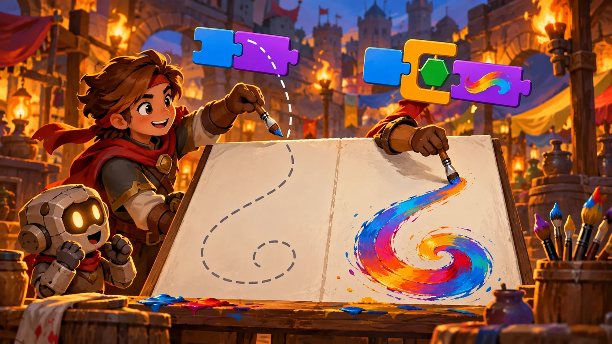
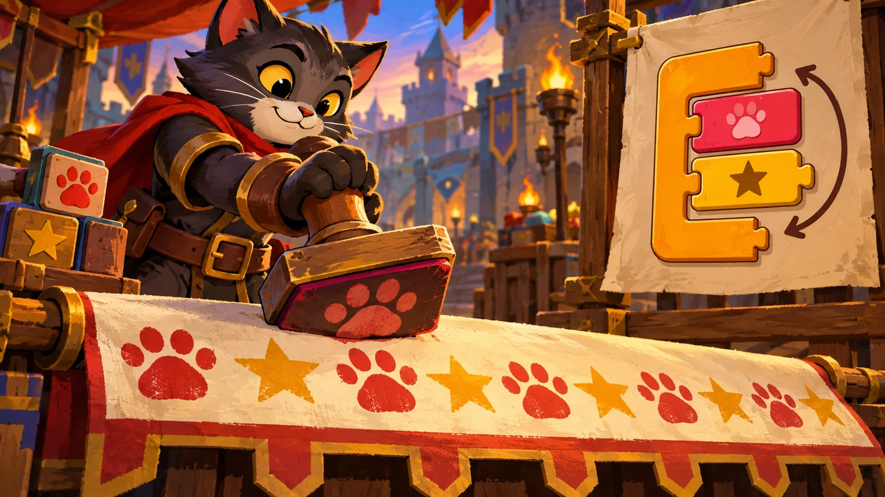

扣哒考级 · GESP 图形化 二级 · 第 5 单元 | 彩虹集市 RAINBOW BAZAAR
彩绘师 画笔
The Pen Extension

安雅
红发队长 · 你的旅伴
集市的中央铺着一块巨大的白布，旁边立着一支比人还高的画笔。
摊主把笔递给你："笔尖挨着布，走哪儿画哪儿；把笔抬起来，就只是走路。"
你试着画了一条线——原来角色不光能"动"，还能"留下痕迹"。
摊主把笔递给你："笔尖挨着布，走哪儿画哪儿；把笔抬起来，就只是走路。"
你试着画了一条线——原来角色不光能"动"，还能"留下痕迹"。
安雅 · 红发队长
画笔是拓展模块，先去模块区左下角把它加上。这一单元只要记牢一件事：落笔走哪儿画哪儿，抬笔只挪位置； 再配上循环，就能画出各种规则图形——正多边形每次转 360 ÷ 边数度。
0 单元导语与目标
Before We Start
0.1 学习目标
- 理解画笔拓展模块：让角色边走边留下痕迹；
- 掌握落笔与抬笔的区别，会用擦除全部清空画布；
- 会设置画笔的颜色、粗细、亮度三个属性；
- 会用图章在画面上盖出一模一样的图案；
- 会用"循环 + 移动 + 转向"画出正多边形和螺旋。
0.2 考纲对照
| 考纲知识块 | 考纲要求 | 本单元小节 |
|---|---|---|
| 4 画笔 | 画笔的抬笔、落笔、擦除、大小、粗细、颜色等属性、图章工具 | 1.1～1.3、2.1～2.3、3 |
| （知识点详述第 7 条） | 掌握画笔的使用方法，熟练控制画笔的属性，掌握图章工具的使用方法 | 4.1～4.2 |
画笔是二级新开的一个"拓展模块"，要先去模块区左下角把它加上才会出现。' '考试里最爱考落笔和抬笔的区别。
1 落笔、抬笔与擦除
Pen Down, Pen Up, Erase
1.1 落笔：开始留痕
集市中央摆着一块大画布，旁边立着一支巨大的画笔。摊主说： "笔尖碰到画布，走哪儿画哪儿。"

assets/illustrations/scratch-L2-05-01_pen_up_down.webp
【配图位】一支画笔抬起时只在画布上留下虚线痕迹，按下后拖出浓重的彩色笔触，两者左右对照。（提示词见《GESP配图清单与AI绘图提示词》第四节 2-5）
重点示例：落笔之后，走到哪儿画到哪儿
图形化积木
读法 先擦干净 → 站到起点 → 落笔 → 走一段（留下一条线）→ 抬笔收尾
1.2 抬笔：走而不画
打个比方：落笔就像把笔尖按在纸上——之后角色走到哪儿，哪里就多一道痕；
抬笔就像把笔抬起来挪位置——角色照样在动，但纸上什么都不留。
抬笔就像把笔抬起来挪位置——角色照样在动，但纸上什么都不留。
对照着看：抬笔和落笔
图形化积木
落笔后移动
抬笔后移动
要点 两块积木动作一模一样，只差最开始那一块——一个画出线，一个什么也不画
1.3 擦除全部
重点示例：把画布清干净
图形化积木
要点 "擦除全部"会把画面上的所有笔迹都清掉，但不会影响角色的位置和造型
一个常见现象：笔迹是画在画布上的，不是角色的一部分。所以角色移动、隐藏、删除克隆体，笔迹都还留在那儿——要清掉它，只能"擦除全部"（或者用画笔的"擦除"单独擦）。
2 画笔的三个属性
Pen Properties
2.1 颜色
重点示例：换一支不同颜色的笔
图形化积木
要点 "设为"是直接换成指定颜色（点颜色方块可以吸取屏幕上的颜色）；"增加"是在色环上往后转一点，常用来做渐变彩虹线
2.2 粗细
重点示例：把笔变粗变细
图形化积木
要点 粗细就是"笔尖有多粗"，值是数字；数越大线越宽
2.3 亮度
图 2（SVG）：画笔的三个属性
打个比方：画笔的属性就像一套真的绘画工具——颜色是你换了哪支彩笔，粗细是笔头的型号，亮度是笔迹的颜色深浅。三者可以随意搭配。
3 图章：盖一个印
The Stamp Tool
3.1 图章是什么
"图章"和"落笔移动"完全不同：它是在当前的位置上，把角色"印"一份下来。

assets/illustrations/scratch-L2-05-02_stamp_tool.webp
【配图位】小猫用一枚巨大的橡皮图章在集市横幅上盖出爪印与星星图案，重复的纹样逐渐成形。（提示词见《GESP配图清单与AI绘图提示词》第四节 2-5）
重点示例：走一步、盖一个印
图形化积木
要点 每走一格就"盖一个印"，于是画面上出现一排一模一样的图案
3.2 图章和落笔的区别
图 4（SVG）：图章与落笔的区别
一个易错点：图章印在角色当前的位置上。所以想盖出一排，得盖一个、移一段、再盖一个——顺序反了就全印在同一个点上。
4 用循环画图案
Drawing with Loops
4.1 重复画同一个图形
重点示例：画一个正方形
图形化积木
要点 "擦除 → 定位 → 落笔 → 循环画 → 抬笔"是画任何图形的固定套路
4.2 正多边形与螺旋
图 5（SVG）：循环画图的常用参数
重点示例：画一条螺旋线
图形化积木
要点 角度固定、长度不变，出来的是正方形；让长度每圈变大一点（或角度小一点），就变成了螺旋
规律总在这里：画正多边形时，每次转的角度 = 360 ÷ 边数；画螺旋时，只要让"每次走的长度"或"转的角度"逐圈变化，图形就不会闭合，而是向外（或向内）绕出去。
5 代码实战
Level Practice
这一关的路线是一个"上下往复的锯齿"——每三块积木构成一个重复单元，' '走出来的形状刚好是一条方波。
关卡 68
方波
进入关卡 →
故事：
集市的地面被画成了一条折线：上去一格、右一格、下来一格、再右一格……
整条路像一段锯齿。你不用一段段描，只要找出"重复的那一小段"就可以了。
思路：观察路线的重复单元：上一格、右一格、下一格、右一格—— 这四步走完，位置比起点向右平移了两格，形状却回到了"准备再上一格"的状态。 把它放进循环里，锯齿就一段段长出来了。
重点示例：找出重复单元，交给循环
图形化积木
读法 口里那八块 "转向 + 移动" 就是一段"上-右-下-右"的锯齿，重复 3 次得到三段
自己试一试：把循环次数改成 6 次，锯齿会一直连下去；把"落笔"删掉再跑一次，你会发现角色照样在走，只是画面上什么都没留下。这就是落笔与抬笔的区别。
这一关看起来是画图，练的其实是"找重复"的眼力——' 这也是循环结构真正的用处：把长得一样的部分交给循环。
画笔 + 循环 = 图案生成器：一条简单的规则重复很多遍，就能长出很复杂的图案。正多边形、螺旋、雪花、分形……都是这个套路。
去扣哒世界闯这一关 →
6 常见陷阱
Common Traps
陷阱 1：忘了"落笔"。角色照样在移动，但画面上什么都不出现——这是新手最常见的困惑。
正确做法：要留痕，先"落笔"；画完记得"抬笔"。
正确做法：要留痕，先"落笔"；画完记得"抬笔"。
陷阱 2：以为"擦除全部"会把角色也删掉。它只清笔迹，角色的位置、造型、大小都不变。
正确理解：笔迹属于画布，角色属于舞台，两者分开。
正确理解：笔迹属于画布，角色属于舞台，两者分开。
陷阱 3：把"图章"当成"落笔"。图章印的是角色的样子，落笔画的是走的轨迹。
怎么选：要连续一条线 → 落笔；要一个一个图案 → 图章。
怎么选：要连续一条线 → 落笔；要一个一个图案 → 图章。
陷阱 4：忘了把画笔模块加上。画笔是拓展模块，编辑器里默认可能没有这一栏。
正确做法：在模块区左下角找到"添加拓展"，把画笔加进来。
正确做法：在模块区左下角找到"添加拓展"，把画笔加进来。
7 题目练习
Practice
前 2 题改编自 2026 年 6 月 · 图形化编程 二级 第 6 题、2026 年 9 月 · 图形化编程 二级 第 6 题，其余为原创练习题。
改编自 2026 年 6 月 · 图形化编程 二 级 · 第 6 题单选题
默认小猫角色，要画一个边长为 100 的正五边形。脚本用"重复执行 5 次：{ 移动 100 步；右转 ？ 度 }"，红框处应该填多少（ ）。
A.72
B.144
C.100
D.90
B.144
C.100
D.90
查看答案与详解
答案：A。画正多边形有一条固定规律：每次转的角度 = 360 ÷ 边数。
正五边形：360 ÷ 5 = 72 度，同时循环 5 次，五次加起来正好转满 360 度，图形才闭合。
B 错：144 度 × 5 会转两圈多，根本连不起来；
C 错：100 是边长，不是角度；
D 错：90 度对应的是正方形（重复 4 次）。
对应小节4.2 正多边形与螺旋。
正五边形：360 ÷ 5 = 72 度，同时循环 5 次，五次加起来正好转满 360 度，图形才闭合。
B 错：144 度 × 5 会转两圈多，根本连不起来；
C 错：100 是边长，不是角度；
D 错：90 度对应的是正方形（重复 4 次）。
对应小节4.2 正多边形与螺旋。
改编自 2026 年 9 月 · 图形化编程 二 级 · 第 6 题单选题
角色处于"落笔"状态，执行下面这段脚本："重复执行 4 次：{ 移动 80 步；右转 90 度 }"。
画面上绘制出来的图形是（ ）。
画面上绘制出来的图形是（ ）。
A.一条直线
B.一个正方形
C.一个圆形
D.一个正三角形
B.一个正方形
C.一个圆形
D.一个正三角形
查看答案与详解
答案：B。走一段、转 90 度，重复 4 次——每次转的角度 90 × 4 = 360 度，正好绕一圈回到原点，画出来的是一个正方形。
A 错：直线是"一直走不转弯"的结果；
C 错：圆形要"每次转很小的角度、重复很多次"（比如每次转 10 度、重复 36 次）；
D 错：正三角形要重复 3 次、每次转 120 度。
对应小节4.1、4.2 用循环画图。
A 错：直线是"一直走不转弯"的结果；
C 错：圆形要"每次转很小的角度、重复很多次"（比如每次转 10 度、重复 36 次）；
D 错：正三角形要重复 3 次、每次转 120 度。
对应小节4.1、4.2 用循环画图。
原创练习题单选题
角色执行"落笔 → 移动 100 步"这一组积木后，画面上会出现（ ）。
A.角色被复制了一份
B.角色走过的路线上留下一条笔迹
C.画面被清空
D.角色换了造型
B.角色走过的路线上留下一条笔迹
C.画面被清空
D.角色换了造型
查看答案与详解
答案：B。"落笔"之后，角色走到哪里，哪里就留下一条笔迹。积木要连起来读：先落笔，再移动——走出来的就是一条线。
A 错：复制角色是"克隆"、"图章"干的事；
C 错：清空要用"擦除全部"；
D 错：换造型是外观积木。
对应小节1.1 落笔：开始留痕。
A 错：复制角色是"克隆"、"图章"干的事；
C 错：清空要用"擦除全部"；
D 错：换造型是外观积木。
对应小节1.1 落笔：开始留痕。
原创练习题单选题
角色要"从画布左边走到右边开始的位置，再从那里开始画"——中间这段路不想留下任何痕迹。应该在移动之前加上哪一块积木（ ）。
A.落笔
B.抬笔
C.擦除全部
D.将笔的粗细设为 0
B.抬笔
C.擦除全部
D.将笔的粗细设为 0
查看答案与详解
答案：B。"抬笔"就是"笔尖离开纸面"——角色照样在移动，但不会留下任何笔迹，正好用来"挪位置不带痕"。
A 错：落笔是反过来，走了就会画线；
C 错：那是把已有的笔迹全清掉；
D 错：把粗细设为 0 是"取巧"，而且很多平台不允许设 0，标准做法是用抬笔。
对应小节1.2 抬笔：走而不画。
A 错：落笔是反过来，走了就会画线；
C 错：那是把已有的笔迹全清掉；
D 错：把粗细设为 0 是"取巧"，而且很多平台不允许设 0，标准做法是用抬笔。
对应小节1.2 抬笔：走而不画。
原创练习题单选题
要画一个正六边形，循环里每次应该右转多少度（ ）。
A.45 度
B.60 度
C.90 度
D.120 度
B.60 度
C.90 度
D.120 度
查看答案与详解
答案：B。画正多边形：每次转的角度 = 360 ÷ 边数。正六边形 360 ÷ 6 = 60 度，循环 6 次。
A 错：45 度对应正八边形；
C 错：90 度对应正方形；
D 错：120 度对应正三角形（重复 3 次）。
对应小节4.2 正多边形与螺旋。
A 错：45 度对应正八边形；
C 错：90 度对应正方形；
D 错：120 度对应正三角形（重复 3 次）。
对应小节4.2 正多边形与螺旋。
原创练习题多选题
下面关于"图章"的说法，哪些是正确的（ ）。
A.图章在角色当前位置印下角色的样子
B.印出来的图案和角色当前的造型、大小、特效有关
C.图章的效果等同于"落笔后移动一段"
D.连续盖多个图章时，中间通常要移动位置
B.印出来的图案和角色当前的造型、大小、特效有关
C.图章的效果等同于"落笔后移动一段"
D.连续盖多个图章时，中间通常要移动位置
查看答案与详解
答案：A、B、D。这就是图章工具的三个要点。
C 错：图章印的是"角色的样子"（一条条的图案），落笔移动画的是"走的轨迹"（一条连续的线）——两者完全不同。
对应小节3.1、3.2 图章。
C 错：图章印的是"角色的样子"（一条条的图案），落笔移动画的是"走的轨迹"（一条连续的线）——两者完全不同。
对应小节3.1、3.2 图章。
原创练习题判断题
在图形化编程中，执行"擦除全部"会把画面上所有角色的画笔笔迹清掉，但不会改变角色的位置。（ ）
查看答案与详解
答案：正确（√）。笔迹是画在画布上的，"擦除全部"只清笔迹，角色的位置、造型、大小都不受影响。
这一点常和"停止全部脚本"混着考——后者才是把程序整个停下。
对应小节1.3 擦除全部。
这一点常和"停止全部脚本"混着考——后者才是把程序整个停下。
对应小节1.3 擦除全部。
8 本单元小结
Unit Summary

贺舒曼 · 镜中先知
画笔让角色"走过的地方留下东西"。记住三组：
落笔 / 抬笔 / 擦除全部、颜色 / 粗细 / 亮度、图章。再记住画图的固定套路：擦除 → 定位 → 落笔 → 循环画 → 抬笔。
你在画布前学到了什么
- 落笔与抬笔：落笔走哪儿画哪儿，抬笔只挪位置不留痕；
- 擦除全部：清空笔迹，不影响角色本身；
- 三个属性：颜色、粗细、亮度，都能"设为"或"增加"；
- 图章：在当前位置印下角色的样子，适合做一排排图案；
- 循环画图：正 N 边形每次转 360 ÷ N 度；让长度或角度逐圈变化就得到螺旋。
下一站：传声筒
画笔解决的是"看得见"的问题。下一单元解决"怎么让多个角色互相通气"—— 广播能让一句话同时传到所有角色耳朵里，变量能让数字被记住。